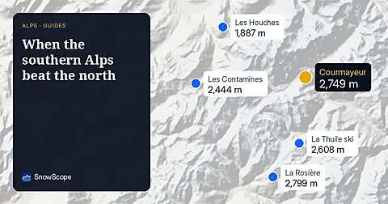

Italy vs Austria: 22 % white against 44 %
Italy is whiter than a week ago but still far behind its Alpine neighbours. On 20 November, 22 % of the mapped high ground carries snow, while Austria reaches 44 % and Switzerland 64 %. The deepest resort in Italy, Monterosa Ski, sits at 128 cm—just ahead of Austria's Rifflsee at 120 cm.
See the live snow forecast for Monterosa Ski in the SnowScope appSnow depth, powder alerts and the 3D map, free.
Which way to ski: the border story
If you are choosing between Italy and its neighbours, the numbers speak clearly. Austria has nearly twice the snow cover of Italy right now, and Switzerland has three times as much. The difference is not about geography alone—it is about where this week's storms landed.
Italy lost 3,530 km² of snow cover between 19 and 20 November, falling from about 24,470 km² to 20,940 km². That drop came as temperatures rose and some lower slopes began to fade. Yet Italy gained heavily over the past three days overall, so the trend is building a base despite the daily setback.
| Country | White | Deepest resort | Next 7 days |
|---|---|---|---|
| Italy | 22 % | Monterosa Ski | 58 cm |
| Austria | 44 % | Rifflsee | 44 cm |
| Switzerland | 64 % | Glacier 3000 | 89 cm |

The top five resorts and what they hold
Monterosa Ski (128 cm) has picked up 48 cm in three days and faces another 26 cm by 23 November. Courmayeur (126 cm) is the standout climber: it caught 140 cm in the past 72 hours and could gain 80 cm more. La Thuile ski (120 cm) collected 130 cm over three days, with 73 cm forecast ahead. Valtournenche (112 cm) is steadier but still building. Ollomont (82 cm) also built fast, gaining 105 cm, and expects 55 cm by Monday.
Of Italy's 237 measured resorts, 165 now carry snow. The pattern is clear: the higher you go, the deeper the base. Monterosa Ski's height of 3,030 m gives it an advantage over lower-sited resorts.

Snow depth by elevation: where the best base lies
Below 1,500 m: almost bare. Between 1,500 m and 2,000 m: on average 3 cm, with only 61 % of ground white—expect rocky patches. Between 2,000 m and 2,500 m: on average 10 cm, 94 % white. Above 2,500 m: on average 27 cm, nearly 99 % white. The snow line sits at about 1,700 m.
This split matters for your day: upper runs are almost fully continuous; mid-mountain slopes are patchy and need care; lower slopes are still risky for buried stones.
The storm that shaped this week
The last 72 hours brought up to 71 cm across Italy, with the Aosta Valley receiving the most—279 cm in its highest zones. The Piedmont Alps picked up 87 cm, while the central Apennines saw just 4 cm. Sunday 22 November is shaping up as the snowiest day, with up to 34 cm falling in the best-hit spots. At least 5 cm landed over about 19,540 km².
Looking ahead, up to 42 cm is forecast for the next three days, and up to 58 cm within seven days. The second week (28 November to 4 December) will be quieter, adding only about 16 cm at most.
How the week unfolded
Snow cover over six days: 16 November 21,210 km²; 17 November 17,790 km²; 18 November 19,640 km²; 19 November 24,470 km²; 20 November 20,940 km². The swings reflect both new falls and melt at lower elevations. The deepest resort changed hands three times as storms moved and settled.
Overall, Italy is 820 km² down from a week ago, but that reflects early-season flux rather than a trend. Fresh snow is arriving faster than melt.
What to do now and what to pack
If you can wait until after Sunday 22 November, the new snow will have time to consolidate and roads will be cleared. That is the best day to plan your trip. If you go sooner, pick runs above 2,000 m where the cover is firm and continuous, and avoid the mid-mountain band where grass and stones still show through.
Cold, fresh snow bonds poorly to the old base, so early-season caution on steep slopes pays. Wear shin guards: rocks hidden under thin snow are part of the game right now. South-facing slopes will soften quickly once the sun hits them; take morning runs there if you have the choice.
Tips for skiers
- Ski above 2,000 m where snow cover reaches 94 % and depth averages 10 cm or more; mid-mountain slopes are still patchy.
- Early-season snow sits thin over rocks: check official avalanche bulletins for off-piste, and stick to groomed runs for safety.
- Cold fresh snow on the old base can slide on steep slopes; go carefully and watch the weather as Sunday's new snow settles.
- If you choose between Italy and Austria now, Austria's 44 % white cover beats Italy's 22 %; Switzerland is even deeper.
- Morning runs on south faces are best once the sun arrives; afternoon snow becomes heavy and wet early in the season.
About these numbers
Resort snow depths are the deepest snow on the resort's upper slopes on the date shown; they are estimates for an area, not a measurement at one point. Forecasts can change. Always read the official avalanche bulletin before going off-piste.
Cite this report
For research, teaching or the press: the numbers and charts are free to reuse under CC BY 4.0 with this citation.
SnowScope (2026), Italy vs Austria: 22 % white against 44 %, https://snowscope.app/blog/en/2026/11/italy-snow-vs-neighbours-20-november-2026.html, accessed 2026-11-20
SnowScope (Atlas Labs). (2026, November 20). Italy vs Austria: 22 % white against 44 %. SnowScope snow reports. https://snowscope.app/blog/en/2026/11/italy-snow-vs-neighbours-20-november-2026.html
BibTeX
@misc{snowscope2026italysnowvsneighbours20n,
author = {{SnowScope (Atlas Labs)}},
title = {Italy vs Austria: 22 % white against 44 %},
year = {2026},
month = nov,
howpublished = {\url{https://snowscope.app/blog/en/2026/11/italy-snow-vs-neighbours-20-november-2026.html}},
note = {Published 2026-11-21 11:27 UTC; accessed 2026-11-20}
}· CC BY 4.0 · Methods, data and tools →
Monterosa Ski: snow and temperature by height, this winter vs last (tools) →
Follow Monterosa Ski
Free: a message when fresh snow is coming, and the forecast every morning.
More snow reports

Can a cautious first-timer trust Courmayeur in December when mid-mountain averages 60 cm of snow across our past winters?

Courmayeur leads forecast with 88 cm in 72 hours; snow depth is at 142 percent of normal for mid-November as of November 15 data.

In 24 of 46 winters, resorts on the Italian and southern French side of the Alps had a relatively bigger winter than the northern side. The chart, the big years and the weather behind them.